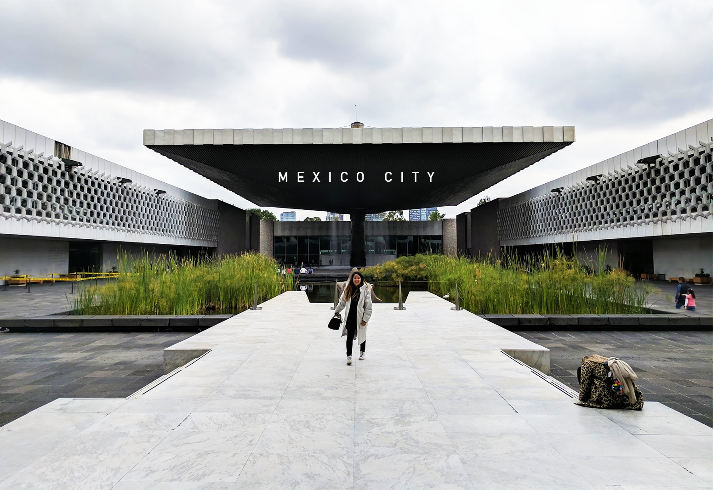

Why right now is actually a good and most helpful time to visit Mexico City

So it wasn’t my original intention to write about Mexico City for the first issue of The InnBox. I was just there last week and I usually like a little more time to process and reflect before writing about a place I’ve visited. However, the aftermath of the earthquake on September 19th has presented a sense of urgency.
My friends and I had booked our tickets and accommodations before the earthquake hit, but up until a few days before our trip we were still debating if we should go. Our main concerns were a combination of personal safety (in case of aftershocks) and not wanting to be a nuisance or distraction to the citizens during this time. After reading accounts from people on the ground in Mexico City, it seemed like there had been significant progress in the recovery efforts and businesses were opening up again, and so it seemed okay to go forward with the trip. That, and our hotel had a very strict cancellation policy, so our decision was mostly made for us.
In the end, I’m really glad we went because…
Mexico City's citizens really want you there.
Tourism is a huge part of Mexico City’s economy. Roma-Condesa, one of the most popular neighborhoods for tourists was also one of the hardest by the earthquake and resulted in business losses ranging from 50% to 80% of sales (if not total loss due to damage) and an estimated loss of $34.5 million pesos ($1.8 million USD) in the first five days alone according to reporting by Expansión. Almost everyone we encountered who is tangentially touched by the tourism industry— from tour guides to taxi drivers to wait staff has thanked us specifically for coming in spite of the earthquake. A few have even explicitly asked us to share our experiences with friends in hopes of gaining new customers. They’re eager for business to return to normal, so bringing your tourism dollars to Mexico City is actually one of the easiest ways you can help.
As a tourist, the earthquake will not really impact your experience.
Almost all of the restaurants and businesses have since reopened for business in Roma-Condesa, and if you venture out to other popular neighborhoods like Polanco, Reforma, and Centro Historico, you will be hard pressed to find any visual evidence of the earthquake. For every one bar or restaurant that might be closed there are 4 more other great ones open. In Roma-Condesa you will see a few damaged buildings but they are all cordoned off with caution tape. If you do come across a damaged building or rescue scene, do not stare and do not take photos out of respect for those affected. The disposition of many of the people we interacted with was also very positive and welcoming, in a way that reminded me of New Yorkers and our tendency to move forward and find a sense of normalcy after tough times.
No crowds.
If you’re still not convinced, then consider the fact that many of the otherwise overcrowded tourist destinations will be more accessible in the next few months. There weren’t any lines to get into the Torre Latinoamericana, and no waits at many of the popular restaurants (our reservations made in advance were largely unnecessary). Most of us even had a whole row to ourselves on our flights into Mexico City.
Where to Stay
Rates are based on a one-night search for January 2018.
For families or groups of friends — Izta 54 Starting at $60/Night
This is the hotel we chose to stay at, and I absolutely adored it. The place is low-key, kind of like staying in an Airbnb with 24 hour security and a daily cleaning service. They have hostel-style rooms with bunk beds starting as low as $60 per night, or if you’re a family or group of friends you can opt for one of their lofts rooms at $189. Keep in mind that the bedrooms in the lofts do not have doors, so privacy is limited. The building itself is beautiful and perfectly located in Hipódromo, putting it right in between the popular Roma and Condesa neighborhoods, next to tons of great restaurants and bars, and also right across from Parque Mexico, and if you’re a dog lover this is definitely the place you want to be.
There are no stairs and no ground floor units so this is not a wheelchair accessible place. In addition, the cheapest hostel-style rooms are on the 5th and top floor.
For design nerds — Hotel Carlota Starting at $108/Night
If you’re a fan of modern architecture and geometry then you’ll love the aesthetic of Hotel Carlota. Carlota is a revitalized hotel that was once a hot spot in the 70’s. Each room was designed by a different group of emerging artists and interior designers in Mexico, and the common spaces feature furniture by Mexican design collective La Metropolitana. It’s also got a ridiculously sick looking pool, a restaurant and gift shop on-site (Taxonomía) that features unique items by Mexican designers ranging from furniture to homeware to fashion. Hotel Carlota is also located in the Cuauhtémoc district, across the street from a large mall with more mid-range stores and restaurants. Hotel Carlota is also one of the more centrally located places you can stay.
Hotel Carlota does have an elevator for guests to use.
For couples and campers — La Valise Hotel Starting at $320/Night
Located in the trendy and hip Roma Norte, La Valise is a small boutique hotel with only three suites. One of which, the Terraza suite, features a bed that can slide out onto the balcony. YEAH. If I weren’t traveling with a group I would’ve been all over this, but La Valisa only features rooms for two. So if you’re like me and love the idea of sleeping in the outdoors while also having all the amenities of a hotel, this is the perfect place for you. The other two suites also each feature their own unique elements like a patio and hammock or a giant circular slab that is also a room divider (I don’t know why… just go with it).
La Valise does not have an elevators due to it being an old building, and children under 12 are not permitted to stay.
For Airbnb lovers — Mr. W Rentals Starting at $93/Night
Hat tip to my friend Gopal, who told me about his experience staying in an Airbnb by Superhost Chris. Chris lists his Mexico City apartments under the moniker “Mr. W” and they are all beautifully furnished and available at quite a wide price range from $93 per night to $1545. My favorite is this $165 apartment in Roma Norte with big glass windows and natural light. For an additional fee, Chris and his staff will also cook you a traditional dinner in your Airbnb!
The $165 apartment in Roma Norte has an elevator, but you'll want to check the other individual listings to confirm.
What To Do
If you love minimal yet cozy and natural looking architecture, you will enjoy this tour of architect Luis Barragan’s home, for which he won the coveted Pritzker Prize. You’ll witness the ways in which Barragan masters light, color, human psychology, and also learn a bit about how his idiosyncrasies influenced the design. You need to make a reservation in advance and tours cost $21, but you’ll need to pay a little more to take photos.
Photo by @simonsok
Street Food Tour
We found Ben, a Mexican City native and author of the blog, What’s Cooking Mexico via Airbnb Experiences. But if you want to cut out the middle man, you can book a tour with him directly here. Ben introduced us to the best taco I had during the entire trip, a Carnitas Campechano taco at Tacqueria El Albanico which uses the whole pig, including pig uterus. He also showed us around the Mercado Jamaica which is known for its flowers and where we got to eat squash blossom quesadillas amongst other delicious dishes. $42 per person.
For the exact opposite experience of the street food tour, eat at the #20 restaurant on the World’s Top 50 Restaurants list. You’ll get to see what “New Mexican” cuisine is like and taste their signature dish, a mole that has been cooking for 4 years, with new ingredients added as necessary. The chef’s menu will run you about $93 per person not including wine. Bonus: watch the Chef’s Table episode about founder Enrique Olvera on Netflix before going.
Photo by @tarngerine
Lucha Libre
I’ve never really understood the appeal of WWE until I went to a live Lucha Libre match. If you’re unfamiliar with Lucha Libre I’d highly recommend going with Rick’s Airbnb Experience. Not only is it one of the highest rated experiences on the site, but Rick and his friend Gus give you an informative introduction to the world of Lucha Libre so by the time you get to the match you know who to root for and what’s at stake. They also start you off with a fun lucha ‘mask masking’ activity. The match itself was crazy and seeing everyone else get so excited instantly makes you excited to! The Airbnb experience is $58 per person.
Museo Nacional de Antropología
Kind of a “must” when visiting Mexico City. The Anthropology museum details the history of Mexico starting from evolution (with lots of shade thrown towards creation theory!) to the Mayans, Toltecs, Aztecs, and Spanish colonization. You’ll see lots of historic works of architecture, art, tools, and pottery. One of their temporary exhibits even features braille exhibit signage and braille versions of the cave paintings that are on display. Be prepared to spend at least two to three hours here.
Biblioteca Vasconcelos
Another cool find from Simon. If you love architecture or libraries, you must go here. It’s free to enter and the architecture is modern, airy, and bright. The stacks look like they’re floating in space and challenge our perception for what a library could look like.
Additional Notes
Mexico City is pretty temperate year round, and the weather reminds me a lot of San Francisco. In the morning it’s kind of dewy and a little foggy, mid-day there might be a lot of sunshine and warmth, and in the afternoon you might get a little rain shower. So, you know, carry a light (rain) jacket just in case.
Uber is the main ride-sharing service available in Mexico City, which many people recommend if you don’t feel comfortable haggling with taxi drivers. They’re also really affordable by American standards. A week’s worth of Uber rides cost us about $80 total.